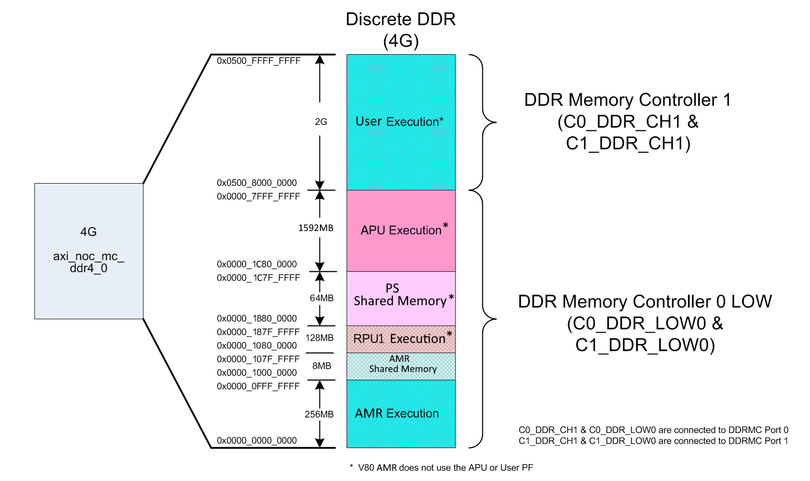
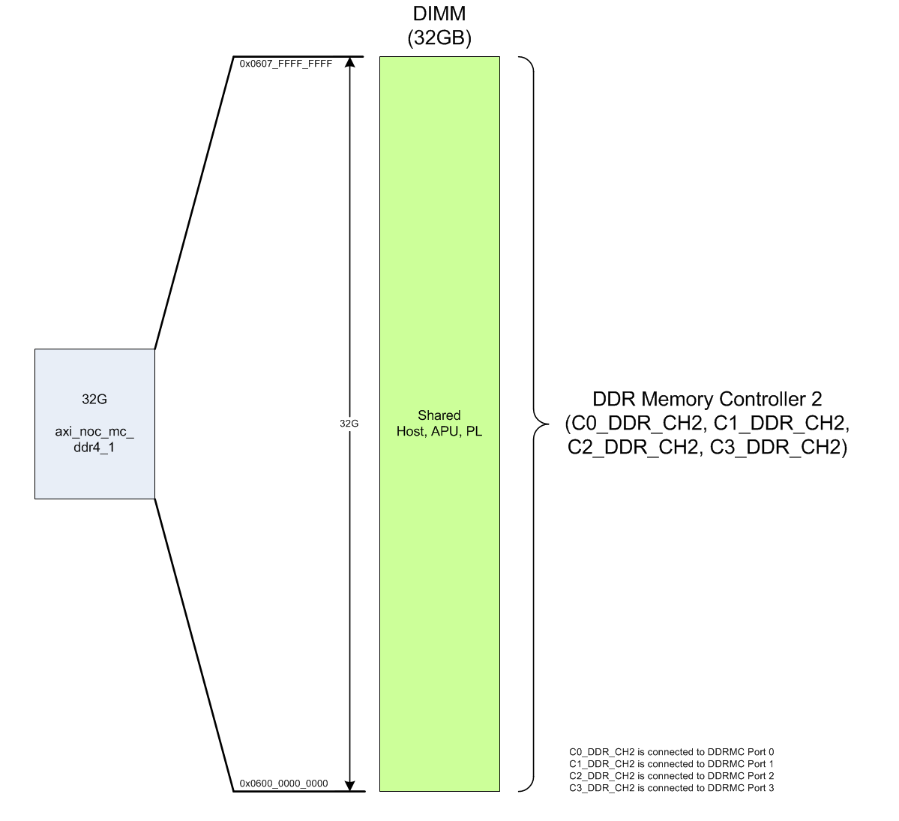
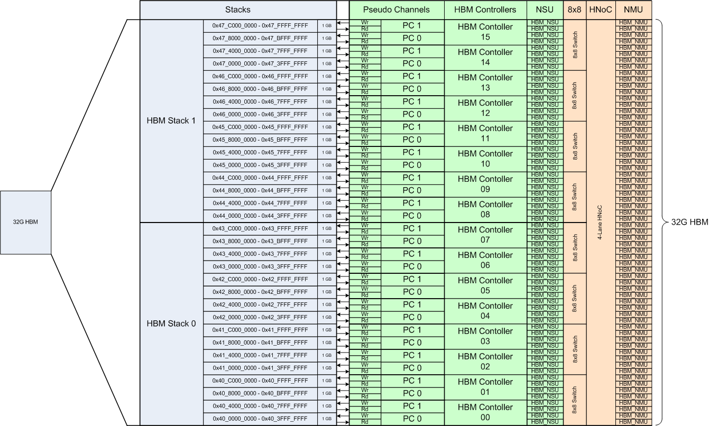

AMR - Memory Resources¶
Overview
The AMR design contains discrete DDR, DDR DIMM, and HBM.
Discrete DDR¶
AMR contains 4GB of discrete DDR that is used for RPU (R5) execution and inter-processor communication. The General Command Queue (GCQ) is implemented as a software mechanism using shared DDR memory regions for communication between the RPU and PCIe host/PMC (not a hardware IP block).
The DDR operates at 200MHz and is controlled by the AMD Versal™ integrated memory controller (DDRMC). This hardened MC contains four ports to optimize throughput to the DDR. The AMR V80 base design uses MC Ports 0 and 1. The diagram below illustrates the organization of the DDR memory.
More information on the MC can be found here: https://docs.xilinx.com/r/en-US/pg313-network-on-chip/Integrated-Memory-Controller-DDRMC-Architecture.

DDR DIMM¶
AMR V80 contains 32GB of DDR DIMM that is a shared memory resource for the host, APU, and programmable logic (PL). There is not any predefined organization or partitioning of this memory. Like the DDR, the DIMM operates at 200MHz and it is controlled by the Versal integrated memory controller (DDRMC). This hardened MC contains four ports to optimize throughput to the DDR. The AMR V80 design uses all four ports, but other connections to these ports are allowed. The diagram below illustrates the DIMM memory space. AMR V80 does not currently use the APU, but it is available for future growth.
More information on the MC can be found at https://docs.xilinx.com/r/en-US/pg313-network-on-chip/Integrated-Memory-Controller-DDRMC-Architecture.

HBM¶
HBM memory is a high bandwidth, low power memory alternative to DDR. AMR contains 32GB of on-chip high-bandwidth memory (HBM). Like the DDR and DIMM, HBM operates at 200MHz. It is controlled by the Versal Integrated HBM controller. There is not any predefined organization or partitioning of this memory.
HBM is comprised of two 16GB stacks. Each stack has eight integrated AXI HBM Controllers. Each HBM controller contains two pseudo channels where each pseudo channel addresses a 1GB dedicated portion of the HBM. The HBM architecture also allows for global memory access to each master connected to the HBM; however accessing a non-direct portion of the memory will come at a performance cost.
More information on the HBM MC can be found at https://docs.xilinx.com/r/en-US/pg313-network-on-chip/Integrated-HBM-Controller.
